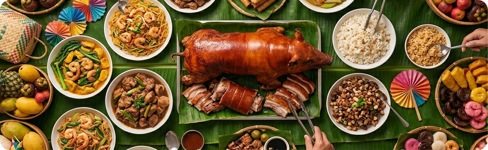
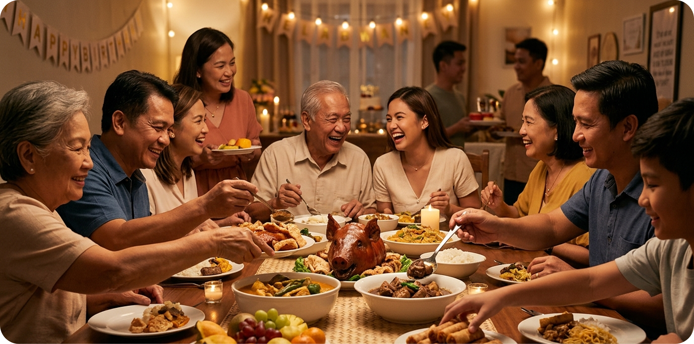
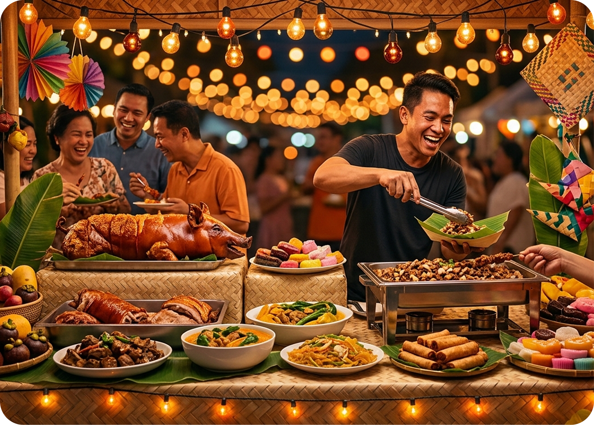
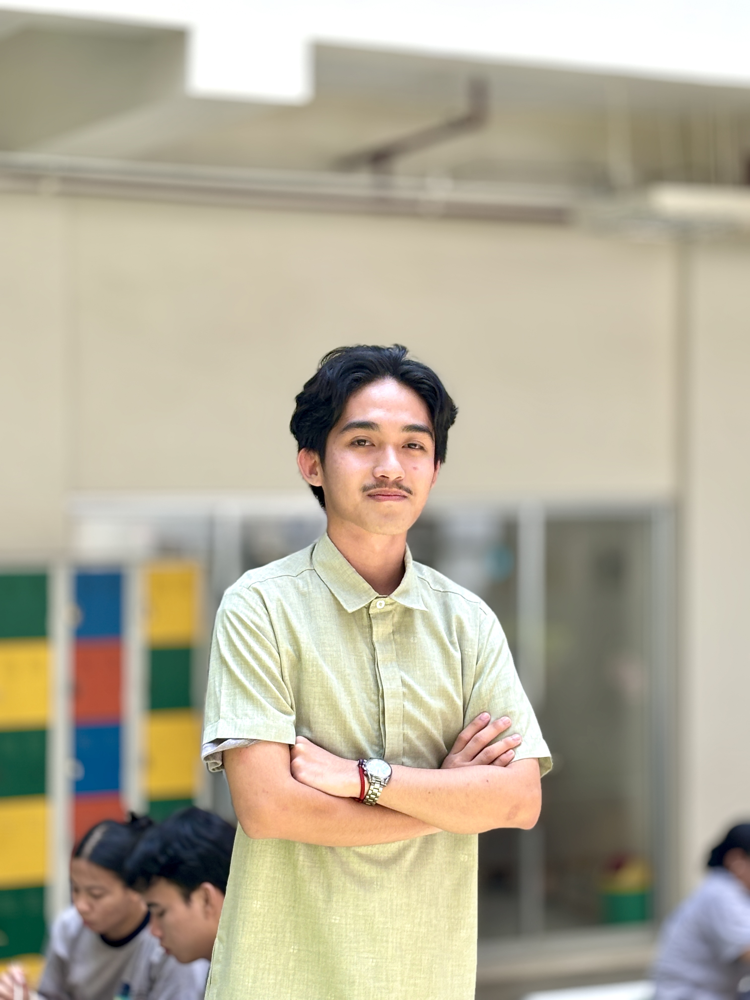
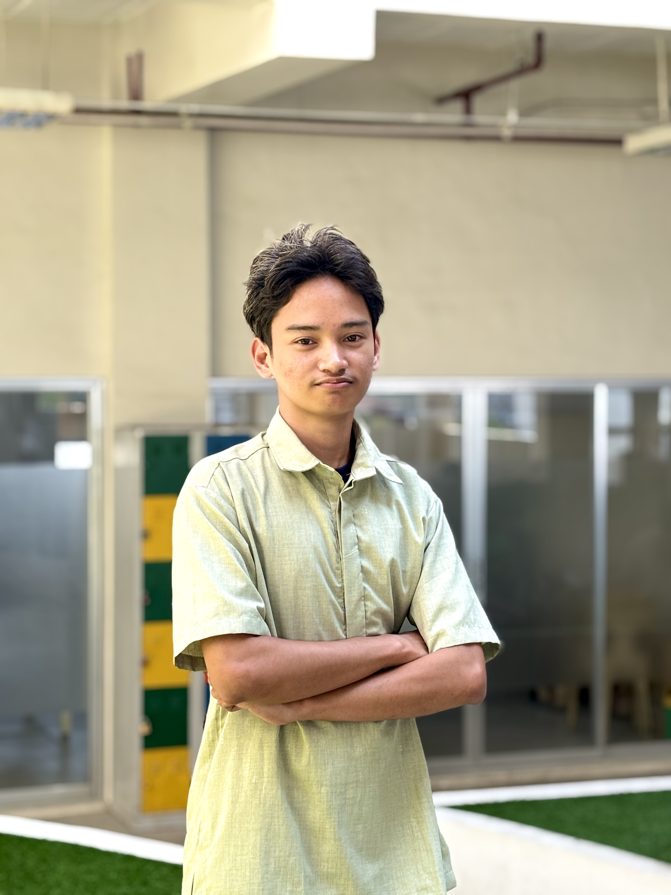
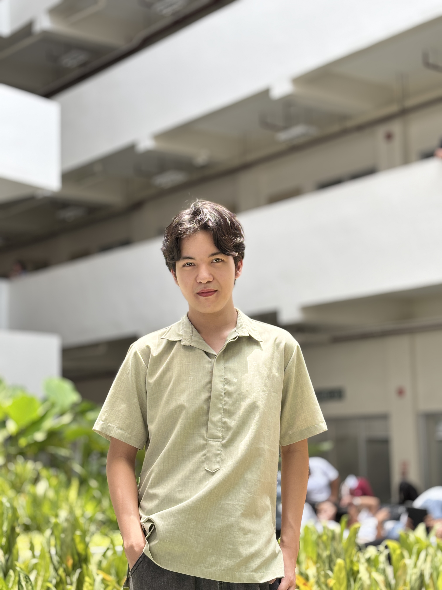
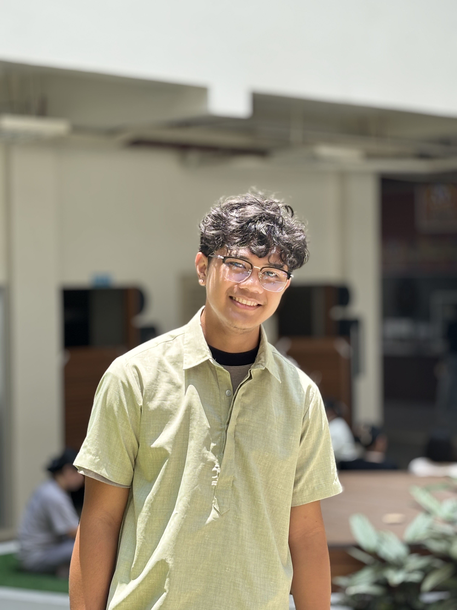

Ready to Celebrate the Fiesta?
Discover authentic Filipino flavors—from classic street food to festive handaan favorites. Tara na, tikman na natin!
Celebrating Filipino culture, heritage, and the simple happiness of gathering around food — made with heart, for all.
FoodieFiesta was created to celebrate the rich flavors and joyful spirit of Filipino gatherings. Inspired by the warmth of handaan culture, we bring together beloved dishes that turn every meal into a memorable celebration.
From crispy lumpia and sizzling mains to sweet desserts and refreshing drinks, every item on our menu is chosen to reflect the comfort, nostalgia, and excitement of a true Filipino feast.
More than just food, FoodieFiesta is about bringing people together—sharing stories, laughter, and unforgettable moments around the table. Because in every Filipino home, the best memories are made over great food.



Our mission is to celebrate Filipino culinary traditions by serving dishes that bring people together—full of warmth, flavor, and the joy of shared moments. Every plate we serve is a reminder of home, heritage, and the spirit of a true Filipino fiesta.
— Nana Aling, Founder of Foodie FiestaWe stay true to Filipino roots by honoring traditional recipes, local ingredients, and time-tested cooking methods that celebrate our culinary heritage.
Food is meant to be shared. We create a space where families, friends, and even strangers come together over meaningful meals and lasting memories.
We prioritize fresh, locally sourced ingredients to ensure every dish is vibrant, flavorful, and made with care—just like it should be.
From preparation to presentation, we are committed to delivering quality in every detail—so every guest feels valued and every meal feels special.
A passionate team of creators, developers, and storytellers who share one common love — authentic Filipino food and culture.

Ian serves as the primary strategist for Foodie Fiesta, overseeing the project’s lifecycle from conceptualization to final deployment. He successfully balances technical development with high-level planning to ensure every feature aligns with the team's vision.

Rainan plays a vital role in bridging the gap between project management and technical implementation. He ensures that the development workflow remains efficient and that every functional component contributes to a seamless user experience.

Bryan is responsible for the overall aesthetic and digital interface of the application, focusing on intuitive navigation and visual harmony. He meticulously crafted the menu layouts to make the process of food discovery both easy and engaging for the user.
Tiffany brings the brand’s festive identity to life through vibrant visual assets and creative design elements. Her work ensures that the application maintains a consistent, celebratory atmosphere that honors its Filipino cultural roots.

Marc ensures that every technical aspect of the project’s architecture and development process is accurately recorded and organized. His attention to detail provides the team with a clear roadmap and a solid structural foundation for all project requirements.
Discover authentic Filipino flavors—from classic street food to festive handaan favorites. Tara na, tikman na natin!